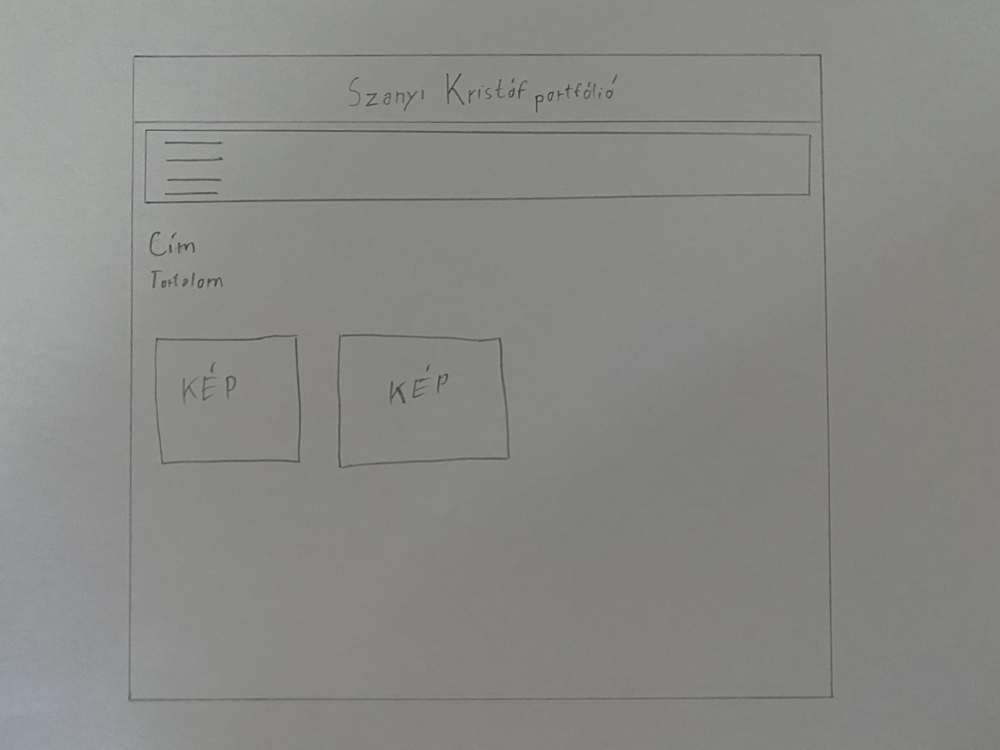

A tervezett vázlatom
A honlap 4 oldalból áll. A kép a legelső tervezet elképzelését mutatja.
Változtatások
Nagyjából sikerült úgy megvalósítanom mindent ahogy akartam azonban pár változtatást én is eszközöltem.
Például eredetileg egyszínű háttért terveztem, azonban úgy igazán egyik színnel sem nézett ki jól ezért kerestem háttérképet hozzá, amivel szerintem jól mutat. Ezen kívűl a menüsort csak egy egyszerű keretbe foglaltam volna, azonban az az új háttérképpel nem nézett ki jól. Ezért döntöttem hogy egy keretbe foglalom, egy szegéllyel és ezt kitöltöm a most látható módón. A többi elképzelésem sikerült megvalósítanom szerintem.
Még a 3. oldalon akadt egy nehézség, ugyanis az egyik képet sehogyse tudtam beszúrni. Ezért elmentettem egy új fájlként és úgy sikerült végülis.